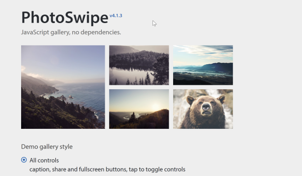
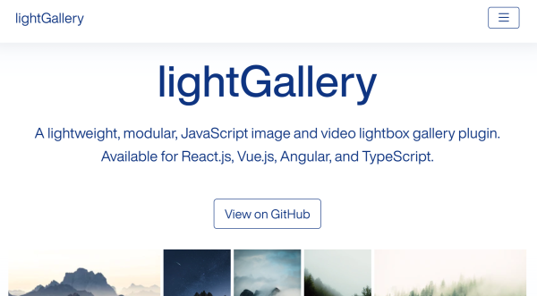
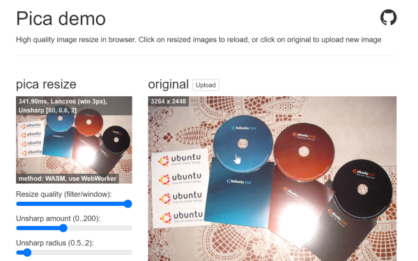
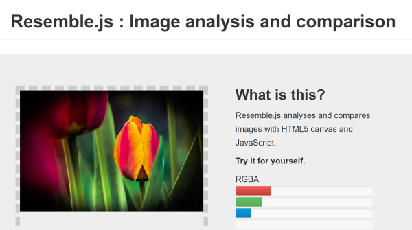
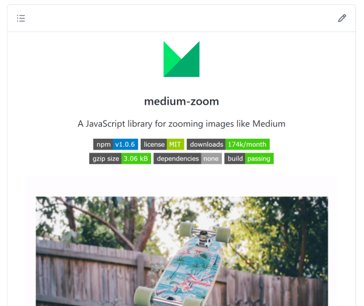
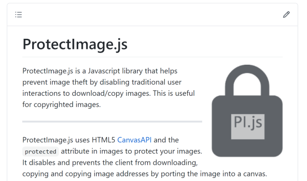
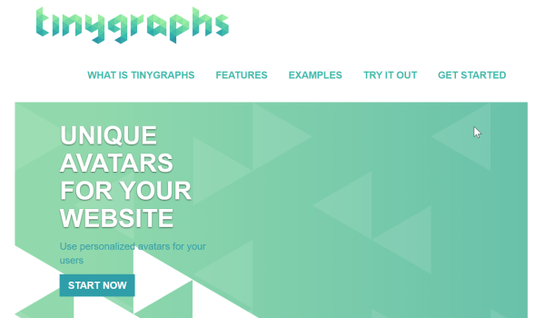
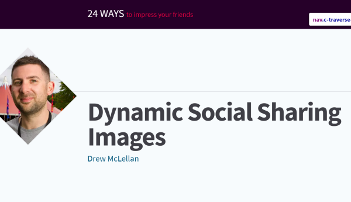
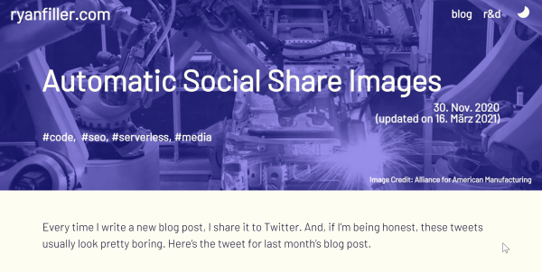

Discoveries #11
Todays issue of Discoveries is all about images. Show them, manipulate them, get information about them, protect them, use them and create them with JavaScript. Have fun trying out one of these cool solutions.
- PhotoSwipe
- lightGallery
- Pica
- Resemble.js
- medium-zoom
- LC-Mouse-Drag
- ProtectImage.js
- Tinygraphs
- Dynamic Social Sharing Images
- Automatic Social Share Images
PhotoSwipe
by Dmytro Semenovhttps://photoswipe.com
PhotoSwipe is a simple, but powerful image gallery written with jQuery, which has plugin support for some CRM’s. Currently Dmytro is working on the next version v5.
lightGallery
by Sachin Neravathhttps://www.lightgalleryjs.com/
Another wionderful image gallery, but with more (useful?) images features, realized as plugins. It supports video and IFrames also and is fully responsive.
Pica
by Nodecahttps://github.com/nodeca/pica
Pica is an Open Source project for resizing images with JavaScript. It supports several technologies, like WebAssembly, WebWorkers or even pure JS.
Resemble.js
by James Cryerhttp://rsmbl.github.io/Resemble.js/
Analyse and compare images with Javascript and visualizes the differences. Great stuff.
medium-zoom
by François Chalifourhttps://github.com/francoischalifour/medium-zoom
Zoom your images on your website to fullsize like on medium.com.
LC-Mouse-Drag
by Luca from LCWeb Italiahttps://github.com/LCweb-ita/LC-Mouse-Drag
Instead of zooming your image on your website, you can let the users scroll into an oversized image, to see the details.
ProtectImage.js
by ColonelParrothttps://github.com/ColonelParrot/ProtectImage.js
ProtectImage.js is a Javascript library that helps prevent image theft by disabling traditional user interactions to download/copy images.
Tinygraphs
by Taironashttps://www.tinygraphs.com/
Supporting avatars in the comment section of a website is cool, but not every user wants to share an image. Tinygraphs helps out with random graphic images.
Dynamic Social Sharing Images
by Drew McLellanhttps://24ways.org/2018/dynamic-social-sharing-images/
Sharing posts on Social Media is vital to get readers and it is a good idea to provide a generic post image. Drew shows how to utilize Node.js to get a page screenshot automatically. The posted script has some pitfalls, but I will post a HowTo shortly.
Automatic Social Share Images
by Ryan Fillerhttps://www.ryanfiller.com/blog/automatic-social-share-images/
Having a screenshot of a page is one side of the coin on creating Social Share images. Ryan shows us, how to enrich them with the appropriate text.
You can interact with this article (applause, criticism, whatever) by mention it in one of your posts, which will be shown here as a Webmention, or by leaving a good old comment with your GitHub account.
Webmentions
No Webmentions yet...
In case your blog software can't send Webmentions, you can use this form to submit me a mention of this article...


Comments